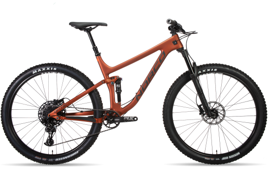

Описание товара
Optic Carbon - это быстроходный велосипед для езды по тропам.
Характеристики товара
- Рама: Norco Optic
- Вилка: RockShox Pike RC, 130мм
- Задний переключатель: SRAM NX Eagle, 12 скоростей
- Шины: Maxxis Minion DHF, 2.3"
- Тормоза: SRAM Level T, 2 Piston Hydraulic Disc, SRAM CenterLine 180mm Rotor
Подробное описание товара
Ездите быстрее, с большим контролем и полной уверенностью - Optic дает вам совершенно новый взгляд на трассу и является идеальным велосипедом для приключений на протяжении всего дня.
Рама Optic Carbon
Engineered with carbon front triangle and seatstays and alloy chainstays and linkarm, the frameset strikes a balance of lightweight, strength and stiffness. Featuring size scaled tubing, the frame maintains the same stiffness and ride quality across all frame sizes. Thoughtful design details such as internal cable routing ensure a clean, sleek design.
Подвеска оптимизирована для Трэйлов
Custom-tuned inline shocks offer high performance at a lightweight. Small-bump sensitivity with a supportive mid-stroke create a perfect balance of traction and efficiency on the way up and complete control on the way down.